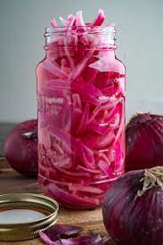

home
pickled onions

description:
my taste in food is strongly biased towards acidity. if a meal isn't
properly acidic, it just can't hit the spot for me. pickled onions
are a perfect ingredient to add acidity to any dish - pizza, tacos,
chili, really almost anything (ethan
chlebowski even puts them on peanut butter sandwiches!). they also add a bright
colour to dishes that make them pop.
)
ingredients:
- large red onion, sliced
- pickling vinegar, 1/2 cup
- water, 1/2 cup
- kosher salt, 2 tbsp
- spices, to taste (black pepper,
red pepper flakes, dill, and cumin seeds all work well)
steps:
- put onions in a mason jar
- bring water and vinegar to a boil
- pour liquid into jar
- add salt and spices
- close jar tightly and place in refrigerator and wait to eat until
onions look purple
- eat within 1-2 weeks